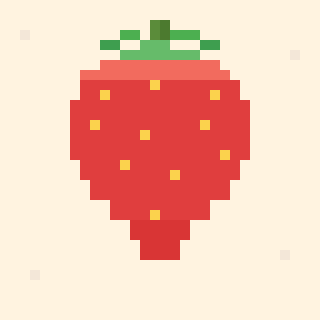
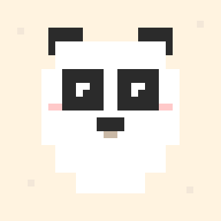

上传任意图片，自动像素化并映射到 MARD 马德色卡，附色号与用量统计，一键导出 PDF 图纸。
拖拽图片到此处，或点击选择
支持 JPG / PNG / WebP / GIF / BMP · 图片仅在本地处理，不会上传


拖入照片、插画或表情包，自动按宽高比适配网格。
选择色板、网格尺寸与颜色数，图纸与用量实时刷新。
导出带色号与用量的 A4 PDF 图纸，照着拼就对了。
正在排版 A4 图纸：图案分块页 + 色号用量清单页。
正在准备…